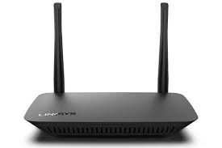
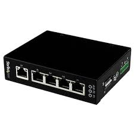
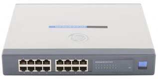
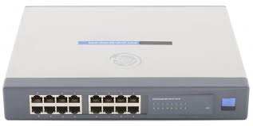

PROJECTS
A little insights about the services that i will be offering too soon
With front-running technologies, we utilize established,industry-leading tools todesign and create networking and IT infrastructure that will help maximize
productivity, reduce operational costs, and mange complex consolidations.
We also have a variety of networking devices such as:
- Repeater: This is an electronic device that amplifies the signal it recieves.
- Modem: Modems are used to transmit digital signals over analog telephone lines.
- Gateway: Gateways normally work at the transport and session layers of the osi model.
- Bridge: bridges are used to connect two or more hosts or network segments together.
- Routers: these help transmit packets to their destinations by charting a path through interconnected
- Switch
You can think of it as a device which receives a signal and retransmits
it at a higher level or higher power so that the signal can cover longer distances,
more than 100 meters for standard LAN cables.
Thus, digital signals are converted by te modem into analog signals of different
frequencies and transmitted to a modem at the receiving location.
Gateways connect two or more autonomous networks, each with its own routing algorithms,
protocols, topology, domain name service and network administration procedures and policies.
The basic role of bridges in network architecture is storing and forwarding frames
between the two segments that the bridge connects.
networking devices. Also used to divide internal networks into two or more subnetworks.
 
 

My Contacts
 BABI ROSE
BABI ROSE
 +256759679491
+256759679491
 @babirose5967
@babirose5967
 baniryer32@gmail.com
baniryer32@gmail.com